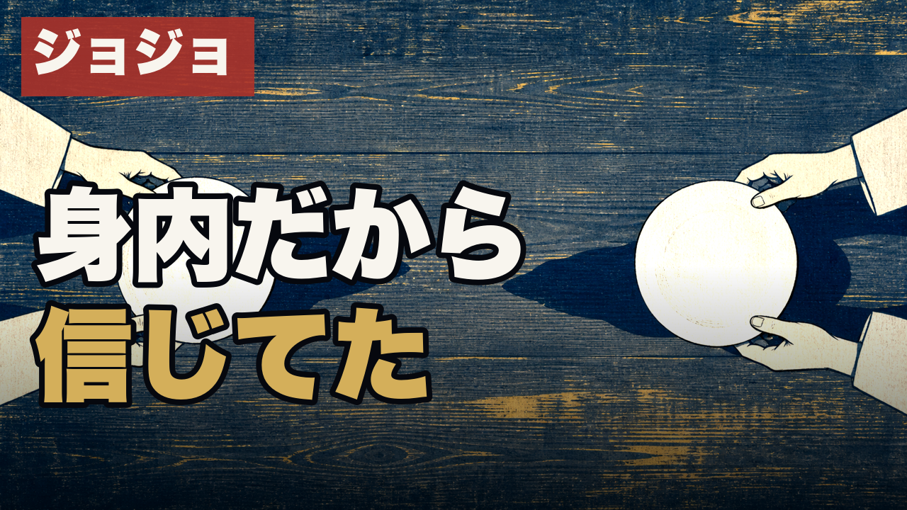
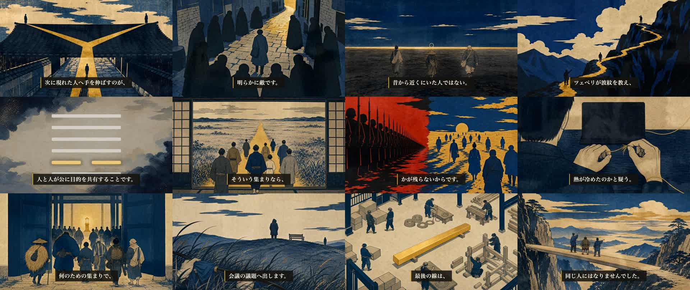
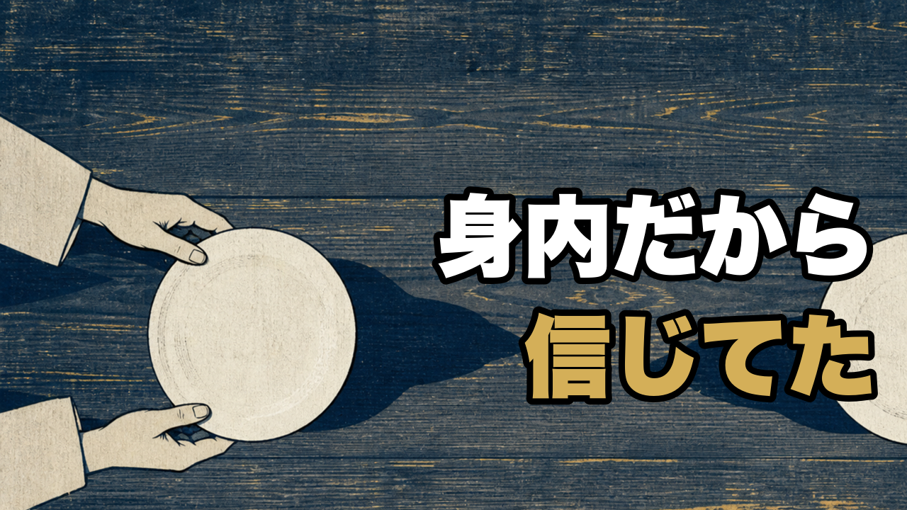
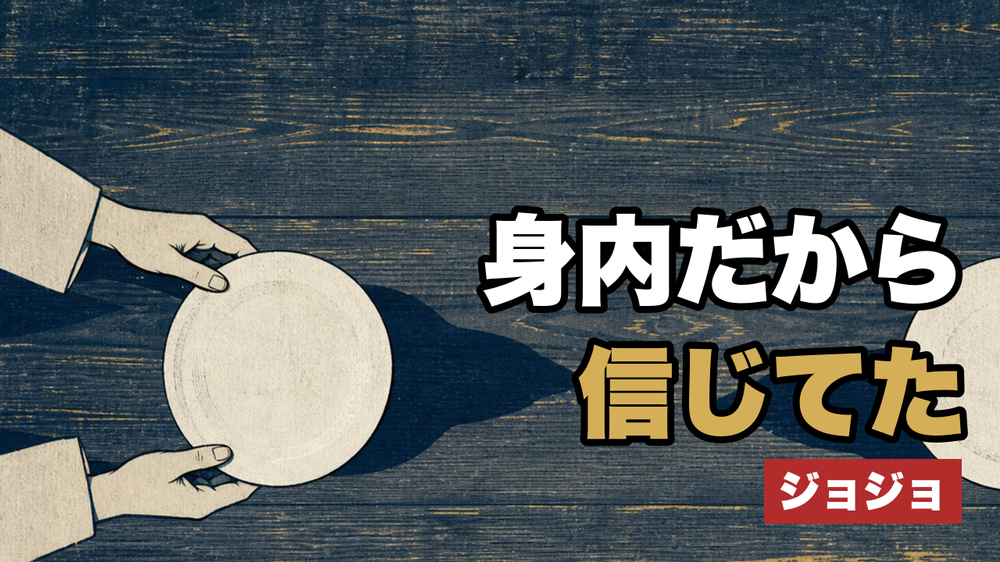

ep39（ジョジョ×同人）final-video 本人承認
ep39-final-video-01 · 2026-07-24 · 回答は最下部の [回答プロンプトを生成] → Claude Code に貼り付け
結論: ep39完成動画（7分31秒）の最終承認をお願いします。承認いただければ 明日 2026-07-25(土) 朝4:00 に予約公開します（公開枠claim済み）。
動画は 7/15にレビューコピーを作ったものと同一バイト（SHA-256一致・mix preflight PASS済み）。公開予定日を6日超過している唯一の未公開回で、これが最後のゲートです。
⚠️ 作業中に判明した分岐が1つ: サムネイルのfork独立採点が84点・83点（2回・同一画像）で品質ゲート90点に届かず、現サムネのままでは台帳のpublishゲートを正規に通せません。Q2で扱いを決めてください（動画・タイトルには影響しません）。
① 完成動画（プレビュー 854×480。実物は1080p・SHA束縛済み）
実物: releases/059/ep39_doujin.mp4（1.07GB / 7:31 / SHA-256 87d912c3…9526d129）
② 公開タイトル（変更不可＝H50 assert / H49 ep_gua 両アーム適合・SHA束縛済み）
ジョナサンは、路地で自分を襲ってきた男と一緒に旅に出た【第三十九話・同人】
ep39はpivot転換コホート外（pre-pivot legacy）のため、痛み先頭型ではなくH49/H50アーム準拠のままが正です。
③ サムネイル（⚠️ fork採点 84点・83点 ＝ 90点ゲート未達）

採点者の指摘（要旨）: 題字の可読性は良好。ただし「左上の赤系タグ＋左側の白/金2行題字」の骨格が直近サムネ（055/056/057）と反復しており、特に057と近い＝独自性の軸で減点。タグを廃止または移動し、単一アンカー（両手と白円モチーフ）へ視線を集める改稿を提案されています。
④ コンタクトシート（黒落ち・崩壊チェック済み証跡）

⑤ 概要欄
description.txt（冒頭）
近い人に裏切られたとき、いちばん怖いのは、人を信じた自分の目が信用できなくなることです。
仲間とは、昔から近くにいた人ではなく、いま同じ方角を向ける人でした。
ジョナサンが路地で襲ってきた男と旅に出た理由を、易経の「同人」で読み解きます。
▼ チャプター
0:00 近い人に裏切られると、自分の見る目まで信じられなくなる
0:22 同じ家にいたディオが敵になった
1:16 路地で襲ってきたスピードワゴンが味方になった
1:56 生まれも役割も違うツェペリが加わる
2:38 易経の「同人」 下に火、上に天が同じ方向へ動く形
4:04 会議で全員一致を装い、いつもの三人で本音を決める私たち
4:50 違うまま同じ方角を向く、六つの段
7:06 同じ顔にならず、進む先だけを重ねた三人
⑥ 機械証跡（検証済み・再調査不要）
| mix preflight | PASS（2026-07-18・rendered_video_sha256 一致） |
|---|
| コンタクトシート | 証跡JSONあり（SHA 9a3ed03a…） |
|---|
| タイトルアーム | title-arm.mjs check 39 ✅（H50 assert / H49 ep_gua） |
|---|
| 公開枠 | 2026-07-25 long → 059 claim済み |
|---|
| harness run | chr_20260715…3089a6（state=awaiting_human＝この承認待ち） |
|---|
決めてほしいこと (未回答 = お任せ = 推奨案で確定)
Q2. サムネイルの品質ゲート未達（84・83点）をどう扱いますか？

改稿ドラフト①（タグ廃止）

改稿ドラフト②（小タグ右下）
全体への赤ペン